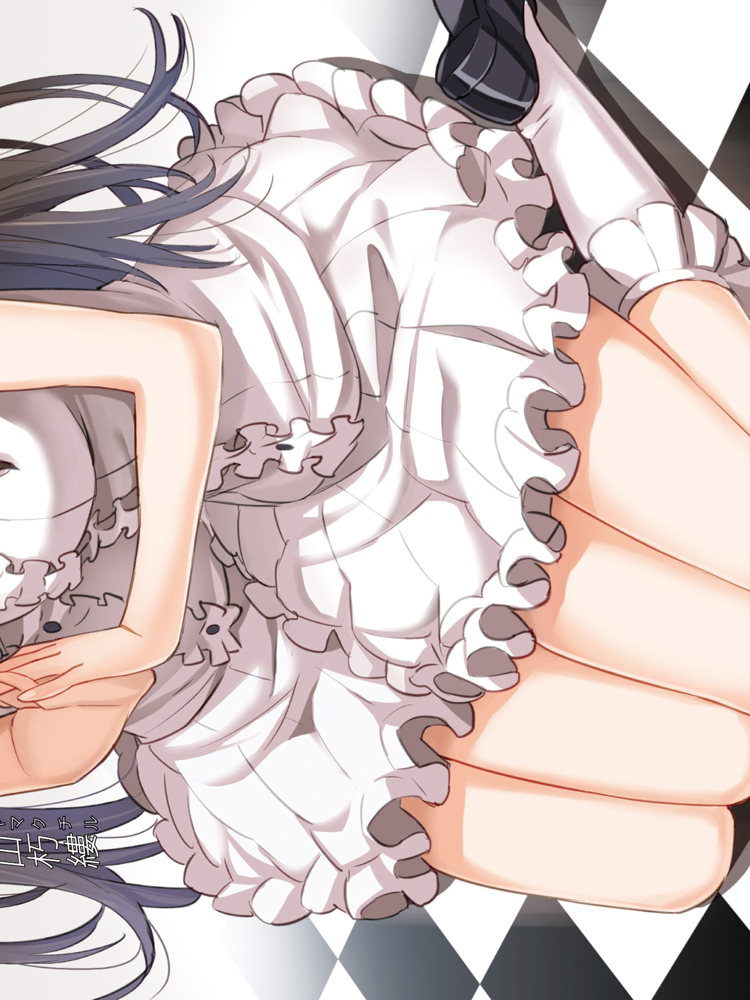
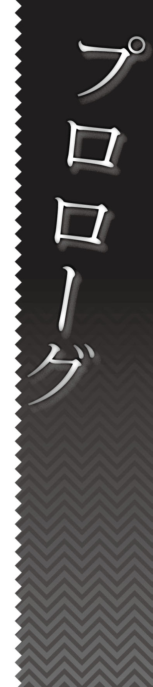
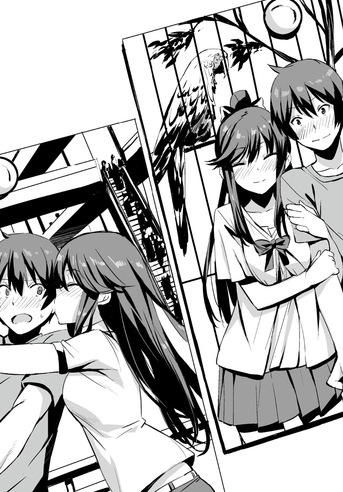
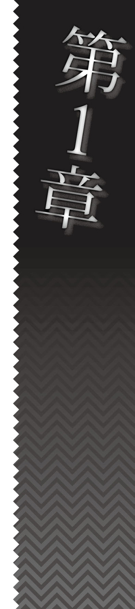

| 双子と幼なじみの四人殺し４【立ち読み版】 | |
| 森田陽一 | |

双子と幼なじみの四人殺し４
森田陽一
本書に掲載されているコンテンツの著作権等の知的財産権およびその他すべての権利は、ソフトバンク クリエイティブ株式会社または正当な権利を有する第三者に帰属します。
本書の内容を権利者の許諾なく複製・複写・翻案・放送・出版・データ配信（送信可能化を含む）などすることはできません。
カバー・口絵 本文イラスト
saitom
登場人物
菱川迷悟...............高校生。双子と一緒に住む。
新山一縷..................高校生。朽縷の双子の姉。
新山朽縷..................高校生。一縷の双子の妹。
菱川一途.....................迷悟の姉。連続殺人犯。
三川ミミ.....................保険医。裏の顔を持つ。
吉崎善果............高校生。三川になついている。
宇田川............三川の手伝いをしている便利屋。
胡桃沢美貴......高校生。先月、一途に軟禁された。
石上放歌......迷悟の叔母。旅館を経営している。

九月。二回目の日曜日。
迷悟は、なんとなく、夏休みに双子と行ったデートのことを思い出した。それは、まだ、一縷があのことを告白していないとき──三人の関係が良好だったときのことだ。
双子が提案してきたデートは、一縷、朽縷ともに同じルートでデートしたのが一回ずつ、そして、別のルートでのデートが一回ずつの計四日間だった。
その四日間は楽しすぎた。迷悟は、三人で遊ばないということに、多少気後れはしたものの──三人でいるのとはまったく違う楽しさがあった。
同じルートのデートは、案の定、同じ映画と同じレストランに行ったので、二回目の映画鑑賞は割と退屈だったが、退屈だったのはそこだけだった。なんというか、同じルートだったのに全然違った。やはり、同じことをしているので、どこがどう違うか、言葉にするのは難しかったが。
別々のデートは、一縷とは県を跨いだアウトレットモールまで行った。片道二時間も掛かって、夏休みのせいか、人でごった返していたし、自分の興味があるものもほとんどなかったが、それでも楽しかった。きっと、一縷が楽しそうだったから──いや、一縷と一緒だったからだろう。混みすぎていて、昼食を取れたのは午後の二時だったし、夕立のせいで一時間ほど帰るのが遅くなって、家に着いたときは完全にクタクタだったが、それすら楽しいというか、心地良かった。そのあと、一縷に「今度は、もうちょっと遠くに行こうか」と笑顔で言われたのが記憶に残っている。正直、あのときは、どこかに行きたいと思えるテンションではなかったが、つい、オーケーしてしまった。何故だかは分からないが。
朽縷とは、都内の動物園に行った。正直、そのプランを提示されたときは乗り気ではなかった。朽縷がそんなものに興味があるとも思っていなかったし、自分はもちろん、興味がなかったからだ。しかし、行ってみると、中々、悪くなかった。動物の感想を言い合ったりした。朽縷の、オオアリクイが可愛い、という感想だけには同意できなかったが。あれは、どうも、動きといい、形といい、恐怖を覚える──好みの問題なので、反論はしなかったが。いつもと、違うことをするというのは、楽しいというか、面白かった。これも、場所が違うからだけではなく、やはり、朽縷がいたからだろう。一人では楽しくなかったはず──というよりも、動物園に行かなかっただろう。
──だからといって、二人がいいわけでもないが。
もちろん、三人がいいわけでもない。

何が良くて、何が悪いかなんて分からないが、少なくとも今が間違っていることは分かる。
迷悟は、その楽しかった記憶を頭から追い出そうとするかのように、家事を済ませてしまうことにした。

九月一日。
例年ならば、今日から二学期が始まり、始業式が行われているはずなのだが、今年は九月一日が日曜日のため、学校が休みだった。実質、夏休みが一日伸びた形だ。この日は存分に晴れ、暑く、まさに夏休みの延長として申し分のない一日だった。
だが、迷悟にとって、この夏休みのおまけの一日は喜ばしいものでも、歓迎すべきものでもなく、嬉しくないどころか、むしろ苦痛で、学校があってくれたら、とすら思ったほどだった。
その日、迷悟は朝から、朽縷の部屋作りの作業を手伝っていた。一縷と朽縷が同じ部屋で生活をするのが難しくなったので、双子の部屋を分けることにしたのだ。
昨日の夜、一縷が迷悟に、過去の事件の真相──迷悟と双子の両親の殺害は、一縷と朽縷の共同での行為ではなく、朽縷だけで行われたものだということを告白した。更に、そのときの会話を朽縷に聞かれてしまっていた。そのせいで、迷悟と双子──そして一縷と朽縷の関係は完全に変質し、冷え切った。だから、部屋を分けることにしたのだ。このような状況に陥って、同じ部屋で双子が生活するなんて不可能だからだ。
新しく部屋を作るため、三人が物置にしていた部屋を朽縷の部屋として使うことになった。荷物の運び出しや掃除は昨日のうちにほとんど終わっていて、今、行っているのは家具や朽縷の所持品をこの部屋に運び込む作業だ。
迷悟の気が重いのは、この作業が嫌だからではない。もちろん、荷物運びは体力を浪費するだけの面倒くさい作業なので、決して楽しいものではないが、それでも、ただの作業なら、ここまで嫌気が差したりはしないだろう。
この気分の原因は今の状況のせいだ。
迷悟は、高校を出たら別々に暮らそうということを双子に伝えたとき、高校卒業までは三人で仲良く過ごし、それ以降、三人はバラバラになるものの、この高校生活は三人にとって、いい思い出として残るのではないか──根拠もなく、そんな風に思っていた。
しかし、実際には、高校生活を二年以上残したまま、いい思い出なんかにはなりそうもない状況が始まってしまった。これから先、仲良く過ごすことなんて不可能だろう。ある意味、進路を違えるよりも三人がバラバラになってしまった気がする。
三人の関係は取り返しがつかないところまで破壊されたのに──同じ屋根の下で生活をしなければならないというのが、より、迷悟の気を滅入らせる。完全無欠に逃げ場がない状態だ。
今、部屋作りの作業は迷悟と朽縷の二人で行っているのだが、この作業の間に会話はほとんどない。せいぜい、重たいものを共に運ぶときの掛け声くらいだ。朽縷からはもちろん話し掛けてこないし、迷悟も、この状況の根本原因である自分から、朽縷に話し掛けることが、なんとなく憚られたので、何も言えなかった。
迷悟は嫌な気分であったが、これで良かった、こうするしかなかった、と自分に言い聞かせた。ずっと三人でいることなどできないのだし、三人でいたら、また問題が起きる──きっと、それは三人でいるという歪んだ状態のしわ寄せみたいなものなのだろう。少なくとも、高校卒業後に別れるという選択をした、自分だけは、どんなに今の状況が苦痛であっても、これを受け入れなくてはならないと思った。
（別れなきゃいけないことは──あいつらだって分かってくれているはずだ）
（それに、仲が良いまま別れるよりも、仲が悪い状態で別れた方が、別れるときの気持ちが楽かもな）
その方が別れることに、別れられてせいせいするといった、プラスの意味が産まれるのだから──迷悟はこのような倒錯した考え方をしてまで、自分を納得させようとしていた。
そして、本当の問題である──朽縷だけ切り捨ててしまえば、一縷とは別れなくて済むということに関しては、最早触れようとも、考えようともしなかった。
迷悟が手伝うべき部屋作りの作業は午後四時には終了した。朽縷には、これから部屋の整理があるだろうが、それは一人でやると言っていた。
迷悟は廊下とリビングの一角を占有している、物置だった部屋から出した荷物の山を見る。それらの荷物は差し込む夕日に照らされ、床にくっきりと影を落としていた。
荷物の大半はこれからの生活では使うことのないものだろう。ずっと物置に置きっぱなしで、使わなかったものばかりなのだから。
これらの荷物の整理は今後、時間に余裕ができたときにでも、少しずつ行うつもりだ。
きっと、大抵のものは捨てることになるだろう。
そういうものだ。
必要だと思っていたから取っておいたものだが、使っていなかったということは、本来は要らないものなのだ。この中には最初から要らないものもあっただろうし、時間と共に──成長と共に要らなくなったものも多いだろう。
多分、何も考えずに捨ててしまうのが正解だ。きっと、考える時間の方がもったいない。それでも、捨てるには惜しいモノが入っている可能性もあるので、中身のチェックをしないというわけにはいかないのだが。
こうして九月の始まりと共に、三人の生活は完全に分裂した。
＊
始業式の朝。いつもなら三人っているはずの食卓には、迷悟しかいなかった。もっとも、一昨日からは三人で食事をすることはおろか、双子のどちらかと食事をすることもなくなったのだが。
一昨日に関して言えば、二人で食事をするチャンスはあった──一縷が迷悟を食事に誘ってきたのだ。だが、それは迷悟が断った。朽縷が一緒に食事をしないであろうこの状況で、一縷とだけ食事をするのが、なんとなく不公平に思えたのだ。もちろん、迷悟も、このようなネガティブな公平さにはなんの意味もなく、この状況で双子に公平に接することにも意味がないことは、分かっていたが。
一縷は食事の誘いを断られたとき、まるで迷悟の気持ちを見透かしたかのように、「もう少し時間が経ったら、一緒に食べようね」と言って、その日の昼食代と夕食代を請求しただけで、一緒に食事をしようと食い下がったりはしなかった。
それからというもの、双子は各々自室で食事を取るようになった。迷悟はリビングの食卓で食事をしているが、きっと、もう少しで双子と同じように自室で食事を取るようになるだろう。あのテーブルは一人で食事をするには広すぎる。それになんだか、リビングが明るすぎるように感じるのだ。こういうときはてっきり暗く感じるものだと思っていたが。
迷悟は冷凍しておいたご飯を解凍し、ふりかけをかけ、ただそれだけをもそもそと口に運ぶ。一人の食事なので、なんとなく、おかずを作る気にならなかったからだ。冷凍のチキンナゲットを食べようとは思ったのだが、これは一縷か朽縷に既に食べられてなくなっていた。迷悟はこれからの食事をどうするか、ということを考えると少し気が重くなった。
一人で食事をしていると、何故だか、いつもは気にならない咀嚼の音まで耳障りだ。食器が立てる小さな音も普段より大きく聞こえる。周りが静かだからだろう。しかし、原因はそれだけではない気もする。
結局、迷悟が食事を終えるまで、一縷と朽縷は食卓に来ることも、部屋から出てくることもなかった。
迷悟は食器を洗って自室に戻る。そして、迷悟の部屋のドアが閉まるとほぼ同時に、廊下から足音が聞こえた。多分、一縷だ。きっと、迷悟の食事が終わるまで部屋から出るのを待っていたのだろう。かなり徹底的だ。時間から考えると、洗面所かなんかを使いに行くのだろう。
（あー......食費も自炊ができないから余計に掛かるだろうなぁ）
迷悟は制服に着替えながらそんなことを考える。お金のことなんて、このタイミングで心配するような事案ではないかも知れないが、家計を管理している迷悟としては、そちらに頭が行ってしまった。もしかしたら、無意識にほかのことを考えて、現実逃避をしようとしているのかも知れない。
（俺が飯作っておいて、温めれば食えるようにしておくとか......どうだろう？）
迷悟は考えているうちに馬鹿らしくなってきたので、考えるのをやめる。食事を作ったのにもかかわらず、バラバラに食べるなんて、なんだかいたたまれない。それならば、金は掛かっても、どこかで買ってきたものを各々の部屋にて、各人、自由に食べた方が徒労感がなくて、良いだろう。
迷悟は制服に着替え終え、時間を確認する。
（出るまで、あと十分くらいか）
次いで、鞄の中身を確認する。今日は始業式なので、持って行かなくてはならないものは何もない。夏休みの宿題の提出日は各教科の最初にある授業のときなので、今日は持って行かなくても大丈夫だ。
（でも、今日のうちに持ってった方が絶対に忘れなくていいかな）
しかし、学校に宿題を置きっぱなしにしているのも、なんだか不安なので、迷悟は今日から提出日までの間、宿題を鞄の中に入れて持ち歩くことにした。多少、本末転倒気味な気もしたが、気にしないのが吉だ。何より、この方が安心だ。
迷悟が、どうでもいいことを考えながら時間を潰していると、玄関のドアの閉まる音がした。迷悟は何事かと思い、玄関の外に出て、辺りを見回す。すると、朽縷が学校に向かって歩いているのが見えた。随分と早い。もしかしたら、迷悟が起きる前から、学校へ行く準備をしていたのかも知れない。
（............そりゃ、一緒に登校はしないよな。あいつ朝飯どうしたんだろ？ もしかしたら、どっかで買って、学校で食うのかな？）
迷悟は、朽縷が朝の人の少ない教室──しかも、始業式の日に朝食を一人で食べている姿を想像したら、なんだか、ため息が出てしまった。
（そうだな......俺もそろそろ出るか）
朽縷が一人で先に学校へ行ったのに、自分が一縷と二人で登校したら、まるで朽縷をいじめているように見えてしまう気がしたので、迷悟はいつもより五分早く家を出ることにした。
迷悟は一縷の部屋の前で、
「俺、そろそろ出るから、鍵閉めてきてくれ」
と、声を掛けてから家を出る。
九月は暦の上では秋とはいえ、まだまだ暑い。夏と遜色ない。家を出てから、しばらくすると、もう汗ばんできた。
今までならば、双子と話しながら通学していたので、多少なりとも暑さが紛れたが、今日は一人だ。徒歩十五分ほどの行程が酷く長く、そして暑く、拷問のように感じる。
ようやく、学校に到着したとき、迷悟はへとへとになってしまった。体力はなんとかなるのだが、精神力を削られて、やる気を根こそぎ奪われたような。
迷悟は教室に入り、ぼんやりとクラスメイトたちを見回す。半分くらいの人間は日焼けしていた。迷悟も七月は旅行に行ったので、ある程度、日焼けをしていたのだが、八月はほとんどインドアで過ごしていたので、また肌の色が戻った。
どうやら、クラスの中でこんなにぐったりしているのは自分ぐらいだった。周りの人間は、夏休みが終わって多少テンションが落ちてはいるようだが、久しぶりに友人と会い、学校の空気を感じ取って、二学期に向けての気持ちの切り替えができているようだった。大抵のクラスメイトは夏休みにあったことなどを、仲の良い友達と話したりしている。
迷悟が教室の様子を観察しているうちに、始業式の時間になった。校庭で二十分ほど、あまり意味のない話を聞かされるために立たされて、精神力のみならず体力までをも削られ、教室に戻ってホームルームを終えたところで、二学期最初の学校は終わった。
双子を待つ必要のない迷悟はすぐに学校を出て、一人でまた、あの十五分は掛かる、怠すぎる通学路を歩き始めた。
これから高校卒業までの間、このような状況が続くと思うと、迷悟はうんざりしてしまった。きっと、この状況が良くなるビジョンも──学園生活が楽しくなる展望も見えないから、余計に気が滅入るのだろう。
＊
始業式とホームルームが終わり、一縷が家に帰ろうと立ち上がったとき、
「久しぶり」
と、胡桃沢に声かけられた。
「久しぶり」
一縷は同じように返す。『久しぶり』と、言ったものの、胡桃沢とは八月の終わり頃、一緒に遊んだので、会うのは数日ぶりだった。大して久しくない。夏休みが終わったあと、初めて学校であったときの挨拶はどうしようもなく『久しぶり』になってしまうのかも知れない。
胡桃沢は夏休み前に比べると髪が伸びた。一縷は胡桃沢がこのまま髪を伸ばすのか、それとも切るのか、少し気になったが、あえて聞くことでもないと思い、聞かないことにした。髪を切った理由も胡桃沢にとっては気持ちのいい話ではないだろうし、触れられたくはないことだろう。
「ねぇ、一縷。今日、お昼はどうするの？」
「決めてないよ」
一縷はスーパーでお弁当でも買って帰ろうかと思っていたが、胡桃沢は、きっと、自分と一緒に昼食を食べたいから、このような質問をしているはずなので、そう答えておいた。
「じゃあ、一緒に食べよ。そのあと、暇だったら遊ばない？ 折角午前で終わったんだし」
「うん、別にいいけど」
胡桃沢はそこで、一縷の横の席に座った。
「昼まで時間あるし、ほかのクラスのホームルームはまだ終わってないみたいだし、少しここで待ってようか、それともどっか行く？」
「ここでいいかな」
一縷もそう言って、座り直した。クラスのほかの人間も直帰する人間は少ないようで、遊ぶ計画や食事の計画を立てている声がちらほらと聞こえる。
胡桃沢は座っている椅子を一縷の方に少し近づけた。
「一縷、夏休み、海行ったんだよね。今度、冬とか旅行行くなら、一緒に行きたいな」
「それは迷悟と相談してからだね」
一縷は一応、そう答えておいた。それに、冬休みに旅行というイベントが発生する保証はどこにもない。今からの四ヶ月間で今の状態になんらかの解決が見られれば話は別だが。それにもし、早々に迷悟が朽縷を切り捨てたのなら──そのときは二人で旅行に行きたい。だから、胡桃沢には遠慮してもらうことになるだろう。
「そっか、だよね」
胡桃沢は顔を少し曇らせる。
「胡桃沢は家族で旅行に行ったりしないの？」
「うーん......この歳でお父さんと二人で旅行に行ってもね。それに、お盆も仕事で休みがなかったみたいだし」
胡桃沢はその言葉のあと、一縷に両親がいないことを思い出したのか、なんだか少しバツの悪そうな顔になった。一縷はそんなことを気にしていないし、逆に胡桃沢に心理的負担をかけるのも可哀想なので間髪を入れずに話題を変える。
「胡桃沢は二学期からの体育の選択、柔道と剣道とダンス、どれにする？」
「そういえば、まだ決めてなかった。今週の土曜日に選択だよね」
「うん」
「......ダンスかなー。柔道とか剣道って、胴着とかにお金が掛かりそうだし」
「そうだね」
「一縷はどうするの？」
「私も決めてないけど............ダンスにしようかな」
「ほんと！ じゃあ、一緒にやろう！」
胡桃沢は嬉しそうに言った。
一縷は別に、胡桃沢が体育で一人ぼっちになりそうだから気を遣って、ダンスにしたわけではない。一縷がダンスを選んだのは消去法だ。高校の授業の柔道や剣道はきっとつまらないだろう。柔道の授業なんて、半分以上は受け身の練習で終わるはずだ。そして、柔道も剣道も試合をしたところで、自分のレベルでは、退屈なのは目に見えている。数時間練習をしただけの素人と試合をしても何も面白くない。それならば、あの意味の分からない創作ダンスの方が多少マシだろうという判断だ。
「そういえば、文化祭実行委員会の方はどうなってるの？」
「今週の半ばから本格始動って感じ、色々仕事も増えるみたい」
「ブランクの方は大丈夫だったの？」
「うん、なんとか。最初の会議とか出られなかったのは残念だったけど」
胡桃沢は六月から七月の頭くらいまで、あの菱川一途に監禁されていた。だから、その間、文化祭実行委員会の会議には出られなかったのだ。更に、監禁されていたせいで、期末テストの勉強をする時間が足りず、数科目赤点を取ってしまい、夏休みに補習を受けていたという話だった。
（補習で友達とかできなかったのかな？ ああいうのって妙な連帯感とか生まれそうだけど）
と、一縷は思ったが、口には出さなかった。きっと、彼女のことだ。そういう機会でも友達はできなかっただろう。
「あっ、そろそろ、ほかのクラスも終わったかな、朽縷と菱川、呼びに行こうか」
胡桃沢はそう言うと、立ち上がった。
（ああ、そういえばそうだ）
一縷はこういう展開──昼ご飯に迷悟と朽縷を誘う展開になることをまったく予想していなかった。自分と妹、そして迷悟と自分の関係は完全に変質してしまったので、なんとなく、無意識に考えから外していたのだ。
「ごめん、ちょっと用事思い出した。胡桃沢と二人でちゃっちゃとご飯食べるなら一緒に食べてもいいけど、あの二人誘うなら、時間かかりそうだしパスするわ」
一縷は言ってから、もう少しきちんと断っておいたほうが面倒くさい展開にならないかも、と思った。選択の余地を残しておくと、変な方向に話が進みかねない。なので、
「やっぱり、二人に悪いし、今日は先、帰るわ。ごめんね、胡桃沢」
と、素早く言い直し、胡桃沢の返事を待たず、教室をあとにした。
＊
同じ頃、朽縷は学校の図書館にいた。始業式の日から図書館に来る人間は少ないようで、朽縷のほかには生徒が一人、二人いるだけだ。
朽縷は別に、本が読みたかったわけではない。ここにいるのは家に帰りたくなかったからだ。一応、なんとなく手に取った本を読んではいるが。
（そういえば、今日のお昼どうしようか......始業式だから、学食はやってないだろうし）
食事のために、どこかのお店に行こうかとも思ったが、朽縷にとって、一人で制服を着たまま飲食店に入るというのは少しハードルが高かった。多分、コンビニかスーパーで弁当なんかを買って帰ることになるだろう。朽縷は、そのことを考えたら、更に気が重くなった。
だが、本当の問題はそんなことではない。
そして、本当の問題は考えたくもない。
はっきり言って、自分ではどうしようもない感がある。手詰まりどころか、詰まる手すら持っていない。
そもそも、この状況において、自分がどうしたいのかも定まっていない。
迷悟と一緒にいたいが、きっと無理だろう。迷悟はもともと高校を卒業したら、自分とも一縷とも別々に暮らすと言っているのだ。更に、一縷にあの事件の真相をバラされた。迷悟が一縷と一緒にいることはあったとしても、自分と一緒にいることはないだろう。もしかしたら、彼は今すぐにでも自分とは縁を切りたいと思っているかも知れない。
だが、このことを考えても涙が出たりはしなかった。散々泣いたから、というわけではない。そもそも、このことで泣いたりなんて一度もしなかった。なんというか、そういうこともできないくらい途方に暮れていた。
朽縷が本の内容を頭に入れず、ただ目で文字を追っていると、
「菱川君、もう帰っちゃったよ」
と、声を掛けられた。
朽縷は不意に声を掛けられたので、びくっ、と震えてしまった。そして、すぐに声の方を見る。声を掛けてきたのは吉崎善果だった。なんだか彼女には気配が薄いときがある。唐突に現れることが多い気がする。彼女は本を一冊持っていた。題名から察するに、どうやら、二次大戦のヨーロッパ情勢を解説した本のようだ。
「め、迷悟は帰ったのですか？」
朽縷は、迷悟が既に帰ったということは、大体予想できていたが、そう答えた。朝だって一緒に登校しなかったのだ、一緒に下校するはずがない。──自分を迎えに来てくれることをほんの少しは期待していたが。
「一緒に帰らないの？」
「今日はちょっと用事があって」
「用事......？ 本を読むのが？ 借りて家で読めばいいのに。そのくらいの時間なら菱川君だって待ってくれるでしょ？」
そこまで言うと吉崎は、朽縷の手元にある本を軽く持ち上げ、題名を確認し、
「っていうか、その本読みたかったの？」
と訊ねてきた。
朽縷が今読んでいたのは、静電気の本だ。文字を目で追っていただけなので、内容は頭に入っていない。多分、高校生が読むような内容の本ではないだろう。
「──ちょっとだけ」
朽縷は下手糞な誤魔化し方で答える。
「ふぅん」
「吉崎先輩は何故図書館に？」
普段なら、吉崎と深く会話することはないのだが、話を逸らす意味も込めて質問してみた。
「この本が夏休みの宿題に必要だったの。だから、借りに来たの。一つ宿題をやり残してたんだ。明後日までに終わらせないと」
「そうですか」
吉崎が朽縷の言葉の終わりに重ねるかのようなタイミングで、
「菱川君と喧嘩してるの？」
と、聞いてきた。
その言葉のタイミングがいきなりだったので、朽縷は一瞬返答に窮してしまった。
「別に──喧嘩はしていませんが」
そして、取り繕うように答える。
「じゃあ、喧嘩以外のことをしてるんだね」
吉崎は朽縷の向かいの席に腰掛けながら言った。
だが、その言葉は間違っていた。今は何もしていない──いや、何もできないのだ。何かできるのならば、どんなに楽だろうかと、朽縷は思った。迷悟とも一縷とも何もしていないし、何も起きていない。ただ、色々となくなっただけだ。
「先輩だから相談に乗ってあげるよ」
「──いえ、結構です。なんでもないので」
朽縷は〝相談〟と言われたとき、一瞬だが、心が揺らいでしまった。相手は吉崎なのに、話を聞いてもらいたいと思ってしまった。今、朽縷には頼れる人間が誰もいない。今まで味方だった迷悟と一縷は、もう味方じゃない。一縷に至っては、多分、敵だ。この件に関しては、一縷をどうにかしない限り、自分はきっと、永遠に──どうしようもないままなのだろう。迷悟の助力は期待できない。
「そう、ならいいけどね」
朽縷は吉崎に絡まれているのも居心地が悪いので、
「では、私はそろそろ帰ります」
と、図書館を出ることにした。
「ばいばい」
朽縷は本を元あった場所に戻し、図書館を出る。
昼食の時間には少し早いが、どこかで食べ物を買って帰り、今日は早めに食事を取ることにした。──もっとも、そのあとにすることもないが。
＊
九月二日、夜。
菱川一途は迷悟の通う高校──城崎南高校に向かっていた。
彼女の目的は夏休みの間に直されてしまったであろう屋上のドアの破壊だ。あれを壊さないと迷悟が昼休みに屋上へ出られない。とりあえず、屋上の封鎖が解禁されるまでは破壊し続けるつもりだ。
一途は適当なところから学校の敷地内に侵入する。校門付近に守衛がいるだけで、校舎内には誰もいないのでひっそりとしている。
（生徒手帳でもあれば、普通に正門から入れるんだけどなぁ）
久保園秤の生徒手帳は自殺を偽装するときに使ってしまったので、生徒手帳を使う場合には新たに入手しなければならない。
だが、彼女にはそれができなかった。
彼女は今、人が殺せない。六月からずっとだ。九月になった今も、依然として、このスランプは克服できていない。名前が酷く気に入った迷悟と同じクラスの少女──尾曲染毬を殺して成り代わろうと、彼女の生活パターンや、家の周り、家族の動向なんかを調査し、何度も彼女の家の近くまで行ったが、結局殺せなかった。名字と名前の最後に〝り〟が付く名前なんて、かなりレアだし、迷悟と同じ学校の生徒というのは便利そうなので、本当に成り代わりたかったのだが。
一応、やむにやまれぬ事情で七月には一度人を殺したが、それだって、得意のナイフを使ってではなく、銃を使ってのことだ。しかも、銃はそのとき捨ててしまったので、今は持っていない。なるべく早いうちに再入手したいのだが、コネのない彼女には非常に難しいことだった。前に手に入れたのもほとんど偶然だ。
更に、一途は人を殺せないことで資金難にも陥っていた。今までは人を殺して金を奪ったり、殺すところを撮影した映像や写真を買ってくれるパトロンのようなものがいたのだが、殺せなければ始まらない。七月に貴島為人から奪った金の余剰分が残ってはいるが、今年いっぱい持つかどうかも疑問だ。もちろん、彼女にそれ以外の収入はない。
一途は、屋上のドアの前に着くと、先行き不透明な将来への不安を振り払うように首を左右に小さく振り、ドアを外す作業に専念する。
前までは、ドア自体を鈍器で破壊していたが、同居人のアドバイスを参考に、蝶番部分を外し、ドアとドア枠の接合部分に修復不可能な傷を作るだけに留めることにした。この方が、音も出ないし、労力も掛からない。修復に掛かる時間がどれだけ変化するのかは分からないが、試してみる価値はあるだろう。
彼女は十分ほどで作業を終えた。やはり、今回の方法の方がドア自体を破壊するよりも楽だった。
（さてと──）
一途は、帰ろうかとも思ったが、一つ、したいことを思いついたので、保健室に行き、部屋を観察し始める。
そして、もし、ここで三川を襲うならどのようにするのが良いか、考察する。一途は、先々月、三川に痛い目を見せられたので、とりあえず復讐をするつもりだった。その行為には道理も義理もないが──あんな人間は生かしておく必要もないし、さっさと殺してしまった方が、きっと、世のため人のためだろう。スランプに関しては、どうにかする──しかない。いざとなれば、きっと、なんとかなるだろう。根拠はないが。
だが、いくら観察してみても、中々良い案が思いつかない。三川がここで生活をしているのならば、寝込みを襲ってしまえばいいのだが、彼女は保健室で生活しているわけではない。そうすると、意外と襲うタイミングがない。
（不意打ちは難しそうね）
一途は次に怪我をした生徒が保健室に運ばれたときに乗じて襲う算段を立て、シミュレートしてみる。
（......だめね）
きっと、そのタイミングで保健室に乗り込んだりしたら、三川は怪我をした生徒を盾にして攻撃を防ぐだろう。もし、ナイフが深々とその生徒の体に刺さったりしたら、次のナイフを取り出すまでに時間が掛かる。生徒に刺さったナイフを再利用するのも難しいだろう。ナイフを抜こうと力を込めた瞬間、その生徒の体ごと自分の体を引っ張られ、体勢を崩されることになりかねない。
（ベッドの下に潜んでおいて、怪我の治療を始めたときに這い出して襲うとかどうかしら──なんか、そんな都市伝説あったわね）
その案はいまいち現実的ではない気がした。それに、ベッドの下に潜んでいるところを見つかったら、這い出してる間に何かされるだろう。危なすぎる。
一途は保健室で襲うことを諦め、ここをあとにすることにした。
（やっぱり、三川の家を襲うしかないわね）
だが、三川の家の調べはついていなかった。一応、一つは住処を見つけたのだが、彼女はどうやら複数の拠点を持っているようだ。資金繰りで困っている一途とは対照的だ。
一途の中には絶対の殺害プランもあるにはあるのだが、それは色々と障壁が多く、中々実行できそうになかった。
そのプランというのは、この学校の生徒に三川宛の宅配物を模した爆弾を届けさせて、生徒が三川にその荷物を渡す際、それを遠隔操作で爆発させるのだ。生徒の方は一万円くらい握らせれば誰だって小さな荷物ぐらい届けるだろう。三川の方も生徒が手渡しで持ってきた物をいきなり受け取り拒否したりはしないはずだ──というのが一途の考えたプランだ。
でも、それは無理だ。
まず、一途は爆弾というものがよく分からない。遠隔操作できる爆弾というものに至ってはもう何がなんだかといった感じだ。
そもそも、一途の頭の中で爆弾といったら、花火の延長線上──火薬を詰めた黒光りする球状の物体から導火線が伸びているイメージだ。それ以外の爆弾は手榴弾しか知らない。
マンガなんかではよく、変なタイマーとごちゃごちゃした色とりどりのラインで構成された四角い爆弾が出てくるが、あれがどうして爆発するのか分からない。電気を流すと爆発するというのがなんだかイメージできない。そもそも何に電気を流しているのかも分からない。火薬に電気を流しているのだろうか。でも、それでは、だからどうしたという感じだ。生き物でもないものに電気が流れたりするのだろうか。今度花火にスタンガンを押しつけてみてもいい。きっと、爆発しないはずだ。というか、それ以前に爆発という現象がいまいち分からない。熱くて人が死ぬのか、痛くて人が死ぬのか、それとも別の理由で人が死ぬのか分からない。
一途もまったく分からないものはさすがに使いたくない。その点、ナイフは分かりやすい。刺さって血が出て痛いから死ぬのだ。
（まぁ、今日のところは帰ろうかな）
一途はその帰り道もずっと三川への復讐方法を考えていた。
今、人を殺せないが──三川を殺せたら、きっと、楽々と人を殺せていた頃の自分を取り戻せる。なんの根拠もないが一途はそんな風に思った。
＊
二学期二日目の昼休み。
迷悟は昼食をどうしようか迷っていた。一学期は双子と交代で三人分の弁当を作って持ってきていたのだが、今はそういうことができない。一人分だけを作って持ってくることは可能だが──それは、できなかった。朝の忙しい時間に台所を長く占有するのは気が引けたし、やはり三人分作らないということに空しさを感じたからだ。
（学食か、購買しかないか。明日からはどうするかな。コンビニで朝買ったものを昼に食うなら、購買で構わないしな......）
迷悟は、とりあえず今日は購買でパンを買おうと決め、教室を出た。廊下には昼休みということで、それなりに人出があった。もしかしたら、購買も混んでいるかも知れない。
すると、後ろから、
「菱川」
と、声を掛けられた。胡桃沢の声だ。
迷悟は振り向いて、
「おぅ」
と気のない返事をした。
「一緒にご飯食べよう」
（そういや、一学期はあいつらと胡桃沢の四人で一緒に飯食ってたな。一緒に食い始めたの六月だし、六月は、こいつ、ほとんどいなかったから忘れてた）
「ああ、構わない。購買行ってパン買うからちょっと待っててくれ」
「やっぱり、お弁当じゃないんだ。一緒に行くわよ、購買。私も隣の自販機で飲み物買うし」
「分かった」
迷悟は購買に向かって歩き始める。何か、胡桃沢に話し掛けようと思ったが、胡桃沢と二人きりだったことなんて、ほとんどないので、何を話したらいいか分からない。
（あっ、これ聞いとくか）
「お前、一縷と食わないの？」
「............一縷は昼休みが始まったら、ほかのグループと一緒に学食行っちゃった」
胡桃沢が酷く落ち込んだ様子で答えた。
「──ああ、そうなんだ？ 朽縷は？」
「教室行ったら、もういなかった」
「で、俺のところ来たと」
「そう」
「なら、一人で食っても良かったんじゃねーか？」
「あんたでも、一人よりはマシだし」
「あっそう」
迷悟は、胡桃沢の口が悪いのにはもう慣れているので、特に反応せずに流す。彼女も本気で言っているわけではないだろう。それに、今の彼女は妙に元気がないので、変なこと言うと、余計落ち込みそうだ。
迷悟は購買で、総菜パンを三つと、飲み物を買い、
「屋上でいいよな？」
と、胡桃沢に聞いた。胡桃沢が頷いたので、迷悟は屋上へ向かう。
屋上の入り口に着くと、ドアが綺麗に外されているのが目に入った。
（............あいつか）
迷悟は、新学期に入っても屋上を開放するとは律儀なやつだと思ったが、それ以上は何も考えずに、外に出た。
「暑い」
胡桃沢が短く言う。
「確かに──やっぱ、ほかのところで食うか？」
本来は双子が教室では目立つから、ここで食事をしていたのであって、双子がいない今となっては、ここで食事をする意味なんてない。
「ううん、ここで食べる。一縷と朽縷、来るかも知れないし」
迷悟には双子がここには絶対に来ないことが分かっていたが、
「そうだな」
と答え、日陰のところまで移動して、食事の準備を始めた。
昼食を始めるものの、二人の間に会話はない。四人で食事をしていたときは大体の会話が双子から始まっていた気がする。迷悟から話題を振ることはほとんどなかったし、胡桃沢もどちらかというと、自分から話し始めるということは少なかった。更に、迷悟と胡桃沢の間に共通の話題が、ほとんどないので、これは当然の結果であろう。
結局、二人は何も話さないまま食事を終えた。食事が終わったあとも話をせず、迷悟はただ、ぼんやり空を眺める。ちょうど、太陽に大きめの雲がかかって、辺りが少し暗くなる。風も少し吹いて、多少涼しくなる。
それから少し経つと、
「てかさ、なんで、一緒にご飯食べないの？ あんたら」
胡桃沢が小さい声で聞いた。
「ん......別に」
さすがに話せる事情ではないので、迷悟は言葉を濁す。
すると、胡桃沢が迷悟の方を向いた。迷悟はちらりと胡桃沢を見たが、目を合わせるのはなんとなく躊躇われたので、また前を向く。
「喧嘩してるの？」
迷悟は少し間を置いて、
「......そんなところだ」
と答えた。もしかしたら、間の置き方が悪かったので、噓だと思われたかも知れない。今の言葉は完全な噓ではないが。
「誰と誰が？」
「............あいつら」
実際には誰も喧嘩してはいない。喧嘩にすら至っていない。何もないだけだ。
「ときどき、あるの？」
「まぁ」
噓だ。双子の空気が数時間険悪になったりすることはあったが、それ以上のことなんて一度もなかった。
「ごめんね、菱川もあんまり、話したくないことだったよね。一応、早く仲直りするように言っておいてね」
迷悟は胡桃沢が随分としおらしいと思った。だが、そのことを茶化したりはせず。
「そうする」
と、言っておいた。しかし、実際には仲直りしろなんて言えないし──そもそも二人は仲違いしていない。距離を置いただけだ。
（そういうのも仲違い............なのか？）
迷悟にはこれがなんなのか、分からなかった。だが、迷悟はなんとなくこの状況には何も名前が付けられないと思った。今、双子の間には何もない。しかし、無関係というわけでもない。そういう中途半端な状態であった。
＊
二学期が始まって最初の日曜日。
迷悟は昼をカップラーメンで済ませた。遂にこの日からは、迷悟も自分の部屋で食事を取ることにした。一週間──よく持った方かも知れない。
休みだからといって、三人が集まることはない。平日と同じく、全員部屋に籠もっている状態だ。双子の方が家の中で迷悟と出会わないことを徹底しているためか、トイレや風呂などでかち合ったこともなかった。
なんだか、気は重いが──実際、生活において変わったことは食事くらいしかなかった。
ただ、一緒に居る時間がなくなっただけなのだ。それに、食事ぐらいしか一緒にいない日は前にもあった。だから、本当はほとんど変わっていないはずなのだ。
だが、それでも、迷悟は、感覚的に、随分変わったと思った。
（まぁ......いつか慣れるか）
世の中を見渡せば、一週間で慣れることの方が少ない。だから、もう少し時間が経てば慣れるだろうと、迷悟は思った。
（それは、それで寂しい気もするけど）
だが、寂しくていいのだ。きっとこの道の先にしか未来はない。この寂しさは未来への代償だ。
迷悟は、部屋で洗濯物の整理をしていると、夏休みに双子と行ったデートのことを思い出した。デートのときに着ていた服が目に付いたからだ。夏休み、双子とのデートは、結局、各二回ずつ行った。一回目は両方とも同じルートで、二回目は別々のルートでデートした。
迷悟は、今となってみては、何か理由をつけて行かなかった方が良かったかも知れないと思った。その四日間が楽しかったからだ。だから、今が余計に辛い。一縷の選択を受け入れた方が──自分は楽なのかも知れないと思ってしまって。
迷悟はそこで洗濯物の整理を一旦ストップさせ、下に降り、飲み物を取りに行くことにする。スポーツドリンクの買い置きがあったはずだ。
一階は誰もいないので、エアコンが付いておらず、むわっ、と暑かった。
（そういや、朽縷の部屋ってエアコン付いていたんだっけ？）
迷悟はふと、そんなことを思ったが──付いていたことを思い出した。あの部屋は元々、迷悟の両親のどちらかが使っていたはずだ。どちらが使っていたかはすぐには思い出せなかったが、記憶をって、母親が使っていたことを思い出した。こんなことを思い出しても──なんの意味もないが。
（でも、エアコンの掃除しないとだめだよなぁ、数年間使ってなかったんだし。朽縷は掃除したのかな？ 聞いてみるか）
迷悟は冷蔵庫からスポーツドリンクを二本取り出して、その足で、朽縷の部屋に向かった。だが、彼女の部屋の前で体が動かなくなり、ドアをノックできなかった。
たとえ、エアコンの保全が目的でも──今、朽縷に会うことは躊躇われた。部屋作りのときのことが思い出される。何も話さず、話せなかった、あの作業を。
迷悟はキッチンまで戻り、ペットボトルを一本、冷蔵庫に入れ直した。そして、部屋に戻り、スポーツドリンクを一口飲むと、ベッドに倒れ込んだ。
そして、なんとなく、自分は何もできない人間なのかも知れないと思った。
迷悟は、小学生の頃、自分が双子を引っ張っているという自負があった。双子より劣る部分はあっても、自分はこの三人のリーダーみたいなものだ、と思っていた節があった。
しかし、双子を引っ張っていたと思っていたのは間違いで、双子は波風が立たないように自分にそういう立場を任せて──いや、押しつけていただけなのだろう。そして自分は愚かしくも、それにまったく気付かず、いい気になっていた。
中学二年生のあの事件のときも双子を守れるのは自分だけだと思っていた。言い換えれば、自分は双子を守れる人間だと思っていた。
だが、自分は双子を守ってなどおらず、真実を隠されていただけだった。むしろ守るように仕向けられたのかも知れない。
──もちろん、双子は守りたい存在で、守ることはやぶさかではないのだが。
そして、高校に入学してからは、自分は何もできない人間だということを思い知らされた──いや、何もできない人間だということにようやく気付いた。
六月の事件のときは、結局、肝心なところで双子に助けられたし、菱川一途の事件は自分たちにとって、実は危機ではなく──ある意味茶番だったとはいえ、双子を危険に晒してしまった。夏休みの旅行中の事件も、自分はただ無意味に走り回った挙げ句、犯人を逃した。
でも、これらが自分に能力があればどうにかなった問題なのか、迷悟には分からなかった。だが、それでも、それでもふがいないと思った。
（まぁ──別に、殺人事件を解決したりしたいわけじゃないけどさ）
むしろ、三川や一途みたいな人間と関わらない能力の方が欲しい。
多分、その手段こそが、双子と別れることで、すなわち、普通に生きることだ。
だから、間違っていない。
こうやって、迷悟は堂々巡りの思考を無理矢理一つの結論に帰結させては、自分の選択を肯定し続けた。
菱川迷悟の二学期が始まって最初の日曜日はそうして終わった。
＊
九月九日、月曜日。
この日は保健委員会の日だった。
だが、朽縷はさほど憂鬱ではなかった。普段の生活がもっと憂鬱だからだ。むしろ、用事があることで気が軽くなったような感じすらした。
（ああ、そういえば、九月に保健委員会でやること考えてなかったな）
朽縷は保健委員会の会議を行う教室に向かっているところで思い出した。たしか、五月に九月にやることを考えてくるという宿題を出されていたはずだ。
（............まぁ、どうでもいいか。なんだったら、またポスターでも作ろう）
以前の朽縷なら、ここで心底悩んでいたかも知れないが、今の朽縷にとっては、こんなもの、本当に些細な問題なので、思い悩むことなんてなかった。
朽縷が教室に入ると、三川が教卓でノートパソコンをいじっていて、案の定、吉崎もいた。
朽縷は、吉崎が手招きをしたので、吉崎の隣に座った。夏休みにも会ったし、なんだか吉崎にも慣れてしまった。
「知ってる？ インドには蚊がいないんだって」
吉崎は突拍子がなさすぎることを言い出す。
「......本当ですか？ 噓ですよね？」
「噓だよ」
「はぁ......」
朽縷は、なんとも益体のない会話だと思った。
「そういえば、私、二学期からちゃんとした保健委員になったんだ」
「そうなんですか」
（まるで、一学期、保健委員の仕事やってたみたいな言い方だな──どうでもいいけど）
朽縷は、これ以上吉崎と話していても、仕方がないので、
「三川先生、今月は何か予定、ありますか？」
と、聞いた。
三川は顔を上げて、朽縷の方を見ると、
「今月は何もないわ」
と、言った。
朽縷は三川の言葉の意味がよく分からなかった。
（何も仕事をしなくていいということなのだろうか──？）
一瞬、ラッキーだと思ったが、よく考えてみたら仕事があった方が幾分気は紛れて良かったかも知れないと思い直した。
「朽縷ちゃん。もし、一人では解決できない問題を抱えているとき──人はどうしたらいいと思う？」
三川が唐突に言った。
もちろん、朽縷も、三川が自分の今の状況を知っていて、こんなことを言っているのだということは簡単に予想ができたが。
（夏休みの旅行のときもそうだったけど──一体、どうやって調べているんだ？）
しかし、それは今となってはどうでもいいことだ。三人の関係は三川に壊されなくたって、全部壊れてしまっている。ここから先はむしろ、最後に残った細々とした関係を壊して欲しいぐらいだ。その方が何もなくなって、逆にすっきりするかも知れない。
朽縷は先の質問に答える気はなかった。かといって、無駄に反抗する気もないので、
「分かりません」
とだけ、言っておいた。
「──答えは簡単ね。誰かの力を借りればいいのよ。設問も〝一人では〟ってなってるしね。つまり、二人以上なら解決できるということでしょう」
「何が言いたいのですか？」
もし、頼れる人間がいるなら──頼りたい。そんなのは当たり前だ。だが、朽縷の人生で頼れる人間なんて迷悟しかいなかった。しかし、その迷悟はきっと、一縷に奪われるのだろう。悔しいとは思う。寂しいとも思う。切なくて、絶望感で酷く苦しいが、でも、どうしようもない。
「私が朽縷ちゃんの味方になってあげてもいいわよ？」
朽縷は三川が何を意図してそんなことを言っているのか考える。
（単純に面白いから、とかだろうな───それ以前に、問題外だ）
そう、三川の力を借りるなんて、できるわけがない。この人間に関わって良かったことなんて何一つない。
しかし、このままではどうしようもないのは事実だ。
これ以上、悪い事態になるということも──そうそうないだろう。
だから、朽縷は、
「それはどういう意味ですか？」
と、聞いた。三川の意図を聞くことは無駄ではないだろう。彼女が本心を語るとは思えないが、建前ぐらい聞いておいても損はないだろう。
「助けてあげるってこと──だから、今夜、一緒に食事でもしながらお話しない？ この頃ずっと、一人でご飯食べてるんでしょ？」
「今更、三川先生、あなたを信じろと？」
「信じられない人間だって味方だったでしょう？」
朽縷は少し視線を鋭くして、三川に睨むような視線をぶつける。それに対し、三川は小さく口角を上げただけだった。きっと、今の言葉は一縷のことを指して言ったのだろう。ずっとクリティカルな秘密を握られつつも味方だった、かの姉のことを。
「今日、朽縷ちゃんも一緒にご飯食べるんですか？ 私も一緒に食べたいです」
吉崎が口を挟む。
「今日はだめよ、朽縷ちゃんと二人で話がしたいの」
「えーずるい」
「で、朽縷ちゃんはどうする？ 一緒にご飯食べる？ もちろん奢るわよ」
朽縷は考える。
一旦、頭ごなしに否定することをやめ、三川の提案に乗ることのメリットとデメリットを考察する。三川にされているという可能性はずっと消えないだろうが、彼女が味方になれば──この状況になんらかの影響はあるだろう。三川は迷悟と一縷にも干渉するだろうし、その結果が良いものになるか、悪いものになるかは分からないが──今のままでは何も変わらないのは確実だ。もし、更に悪い状況になったとしても、それはそれで良いかも知れない。悪い状況なら改善できるが、どうしようもない状況は、どうしようもないのだから改善など期待できない。それならば、話くらいは聞くのも悪くないだろう。
「......分かりました、では、ごちそうになります」
「そう。じゃあ、私の仕事が終わるまで──そうね、六時くらいまで善果ちゃんと時間潰してて」
三川はそう言うと、ノートパソコンをぱたんと閉じ、教室から出て行った。
＊
夜。
一縷はリビングで野球中継を見ていた。リビングには一縷しかいないので、広々としている。以前は一縷が床に寝転がってテレビを見て、ソファーに迷悟と朽縷がいるということが多かったのだが、ここ最近、二人はリビングにほとんど来ないので、一縷はソファーに寝転がりながらテレビを見ている。本当は、テレビも自室で見たいところなのだが、衛星放送が映らないので野球中継が衛星放送しかないときは、仕方なくリビングに来ている。一週間ほど前は、迷悟が食事だけはリビングで取っていたようだが、それも最近、なくなった。
放送している野球は八回裏が終了し、逆転がなければあとは表の回のみとなった。そのとき、迷悟がリビングにやって来た。
（珍しい──どうしたんだろう）
ここ数日、三人はまったくと言っていいほど顔を合わせていない。自分の目的地に人がいそうな場合はある意味譲り合って、会わないようにしていた。それは迷悟も同じだ。
「一縷、朽縷がまだ帰ってきてないんだ、何か知らないか？」
迷悟は一縷の前まで来ると、やや、切羽詰まった感じで聞いてきた。
一縷はリビングの時計を確認する。時間は二十時五十分を回ったところ。
「知らないよ」
「電話とメールしたんだけど、電源切ってんのか、繫がらないんだ」
「ふぅん」
「............そろそろ、探しに行こうと思う。手伝ってくれないか」
一縷はあえて迷悟の方を向かず、テレビの画面に目を移す。
（ってか、まだ九時にもなってないじゃん。迷悟は何を心配してるんだろう？ 夕飯食べて、友達と話したりしてたら、普通、そのぐらいになると思うけど。それに朽縷のことなんて──どうでもいいし）
とは、思ったものの、口には出さず、
「朽縷も子供じゃないんだし、大丈夫だと思うよ」
と、言っておいた。
「──じゃあ、俺一人で探しに行く、朽縷が家に帰ってきたら、連絡くれないか？」
「分かった」
一縷が答えると、迷悟はすぐに出て行った。
（どうやって、見つけるつもりなんだろ、迷悟は？ 何かしてないと、不安なのかな？ もしかしたら、朽縷は空気読んで、出て行ってくれたのかも？ そしたら、迷悟と二人きりになれてラッキーだな）
そんなことを考えながら野球の続きを見る。結局試合は逆転などおきず、リードしていたチームが勝った。大抵はそういうものだ。逆転はまれにしか起きないから価値があるのだ。前に野球中継の間のデータ紹介で、あるチームの先制点を上げた試合の勝率が良いと言っていた。一縷は際限なく頭が悪いと思った。先制した試合の勝率が悪いわけがない。バスケットボールのように大量に点数が入るスポーツならともかく、野球やサッカーなど点数があまり入らないスポーツは先制した方がほとんど勝つに決まっている。一試合の平均得点のデータと併せてみれば、それがどれだけ確からしいか、すぐに分かることだろう。
一縷がテレビを消し、部屋に戻るか、それとも、先にシャワーを浴びるか考えていると、インターフォンが鳴った。
（誰だろ、こんな時間に？）
一縷は玄関まで行き、一応ドアガードを掛けたあと、ドアを開けた。
そこにいたのは菱川一途だった。
一縷はすぐ、飛び退くように距離を取る、そして、彼女が以前銃を持っていたことを思い出し、ドアが開く限界の角度から逆算して銃の射線に入らないよう気を付ける。
だが、一縷のその行動の隙に、一途は、閉まり掛かったドアに足を差し込んで、閉められないようにしてしまった。闊だったかも知れない。
「元気にしてた？」
一途は、ドアの隙間から中を覗き込みながら言った。
「何をしに来た、帰れ」
一縷はにべもなく言い放つ。
（今、迷悟が帰ってきたら、まずいな──早くなんとかしないと）
「ワタシね、あなたたちのことを聞いちゃったの──三川と朽縷が話をしていてね、それをたまたま盗み聞きしちゃったの。それで居ても立ってもいられなくなって、ここに来ちゃったの」
「......何が言いたい」
「ワタシね、迷悟には、一縷こそがふさわしいと思うの」
一縷は、すぐには次の言葉を出さず、様子見する。
「人を殺したのは朽縷の方だけ、というのなら、あなたに迷悟を任せられるわ。幼なじみで子供の頃からずっと一緒にいる、一縷こそが迷悟の伴侶としてふさわしい人間なの」
「だから？」
そんなことは言われなくても分かっている。それに、きっと朽縷は迷悟のことが好きではない。依存しているだけだ。だから、本当に迷悟のことが好きな自分こそが彼にふさわしい。分かりきっていることだ。
「朽縷は三川と手を組もうとしている──何をしようとしているかは分からないけど」
一縷はその言葉をいまいち信じられなかった。確かに、今、朽縷には頼れる人間が居ない状況だろう。だからといって、三川を頼るというのは、およそ考えられなかった。
「だからね、ワタシね、あなたの味方をしようと思うの」
（つまり、こいつは──私と迷悟をくっつけるために、朽縷と三川の邪魔をしようとしているのか？）
「きっと、それが迷悟の幸せだから」
一途はまるで演技のような動作で胸に手を当てて言った。
一縷は、少し間を置き、
「言っていることは間違っていない。でも、私はお前の助けなんていらない」
と、答えた。
一途は、口の端を少し上げ、顔を笑顔の形に歪ませた。
「まぁ、そう言うと思っていたの。でもね、ワタシね、勝手に手伝うから」
一縷は一途に冷ややかな視線を浴びせる。
「じゃあね」
一途はきびすを返し、その場を去っていった。一縷はドアを閉め、鍵を掛けると、ドアガードを外した。
（手伝うも何も──このままなら、迷悟はきっと私と一緒にいることになる）
だから、一縷は、一途にできることなんて何もないと思った。しかし、ああいうろくでもない手合いが、暗躍している状況というのは気持ち悪い。
（っていうか、朽縷は三川のところにいるのか。迷悟に教えてあげようかな───いや、それを聞いたら迷悟は変なことしそうだな。黙ってよう）
一縷は、シャワーでも浴びて、自室に戻ることにした。問題は何もない。このまま行けば、迷悟もきちんと思い直して、自分と一緒にいることを選ぶはずだ。それが正しい選択だし、迷悟の求めている──普通の人生とはそういうものなのだから。
それに、朽縷と三川の件は心配しなくていいだろう。さすがに手を組むことはないはずだ。
やはり、問題は何もない。
＊
迷悟は通学路を中心に街を歩き回っていた。帰宅時間のピークを過ぎたからか、人の波も一段落していて、辺りは完全に夜の雰囲気だ。店もコンビニ以外は大体閉まっていて、街灯以外はほとんど光がない。
迷悟は携帯電話で何十回目かのコールを試みる。繫がることを期待して掛けるというよりは、こうでもしていないと落ち着かないから掛けるといった感じだ。現に、迷悟も繫がるとは思っていない。
そして、案の定繫がらなかった。
迷悟は舌打ちをする。そして、今度は、いつも行くスーパーマーケットへの道を歩いてみることにする。
（何やってんだよ、朽縷は......！）
迷悟は一瞬、朽縷に対する憤りを感じたが、すぐにそれは収まり、自責へと変わった。
（───でも、あいつも家に居づらいだろうしな）
そして迷悟は、そんな朽縷をフォローしなかった。というよりも、どうフォローしたらいいか分からなかった。
迷悟はこの状況に対する解決策を何一つ持っていなかった。だが、こうなって欲しいという希望はある。今までのように──一学期と同じように過ごして、そして、高校卒業と同時に別々の道を、自然に歩みたい。しかし、それも一縷の告白のせいでうまく行かなくなった。もう、今までのような関係ではいられなくなった。無理に今までの関係と同じように振る舞うこともできるだろうが、それに意味はないだろう。それでは何も解決しない。そして、何をもって解決とするのかも不明瞭だ。そもそも、解決できる類の問題でもないのかも知れないが。
迷悟がそんなことを考え落ち込み始めたとき、携帯電話に着信が来て、振動した。
朽縷からの電話だ。
迷悟はすぐに出る。
「朽縷か!?」
『うん。いっぱいメールしてくれたみたいで』
「今、どこにいる!?」
『三川先生の車』
「──な、なんで、三川の車に？」
迷悟は一瞬の内に色々と良くない想像をしてしまう。朽縷は三川に連れ回されているのかも知れない。
（でも、それにしては朽縷が余裕そうな......）
そんな迷悟の心配を読み取ったかのように、
『大丈夫。もうすぐ家に着くよ。保健委員会の仕事で遅くなったから、夜ご飯をごちそうになってたんだ。地下のお店だったから、電波が届かなくて、メールとかに気付かなかった。ごめんね』
電話口から、朽縷の返事が返ってきた。
「だからって──」
と、そこまで言い掛けて、迷悟は言葉を止めた。
朽縷を非難するのは筋違いだと思ったからだ。三人がバラバラに食事をするようになったのに、ほかの人間と食事することを咎めたりはできないからだ。たとえ、その相手が三川でもだ。少なくとも自分が言っていい言葉ではない。それは、この状態になりながらも、三人で食事をしようと──仲を取り持とうと努力した人間だけが言える言葉だ。
「......今度から、そういうときは連絡しろよ。心配だから」
『そうだね。悪かった。謝る。今後は連絡するよ』
迷悟はそこで電話を切った。そして、ため息をつく。
この一週間──全然うまく行っていなかったが、もっと悪くなりそうな気がしたからだ。
（でも、これが徐々にバラバラになるってこと──だよな）
これでいいはずなのだ。
それに三川だって、吉崎には良くしている。もしかしたら、朽縷にもそうしてくれるのかも知れない。そうならば──過去の遺恨はすべてなかったことにして、三川に朽縷を任せるのだってありだろう。迷悟の心情的には中々許容できることではないが。それに、そもそも、過去の問題をなかったことにするかどうかは、朽縷自身の問題だ。自分が口を挟むべきことではない。一番は双子が幸せになることなのだ。むしろ、三川が味方になった方が──朽縷の幸せには近道なのかも知れない。少なくとも何もできない自分より、三川の方が遥かに役に立つ人間のはずだ。
迷悟はとぼとぼと家を目指す。
きっと、これからもこういうことはあるのだろう。
もしかしたら、この状況に慣れていないのは、自分だけなのかも知れない。自分だけが変質した関係を受け入れることができていないのだろう。
双子は各々この状況に適応しようとしている──ような気がする。
ならば、自分もそうした方がいいのだろう。
なにより、自分が選んだ道だ。
そうするほかない。
双子がこの道を否定しても、自分だけは否定するわけにはいかない。
迷悟は、今度はため息ではなく、深呼吸をすると、なんとなく空を見上げた。雲が多く、その雲はどこかの明かりのせいで赤く染まっていて、終わりかけた夕焼けの出来損ないのような空だった。
この続きは製品版でお楽しみください。
ＧＡ文庫
双子と幼なじみの四人殺し４（立ち読み版）
森田陽一
発行人 小川 淳
発行所 ソフトバンク クリエイティブ株式会社
〒１０６－００３２
東京都港区六本木２－４－５
装 丁 株式会社ケイズ（大橋勉／彦坂暢章）
印刷・製本 中央精版印刷株式会社
２０１３年１月３１日 初版第一刷発行
２０１３年６月１日 電子第一版発行
©Youichi Morita ISBN 978-4-7973-7286-1